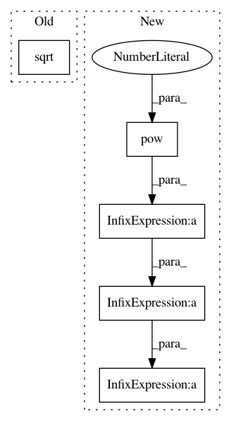

a97304d53e873ce5949b486c8fcbf5d4fcab7a3b,adversarial_text/adversarial_losses.py,,_scale_l2,#Any#Any#,174
Before Change
// shape(x) = (batch, num_timesteps, d)
x /= (1e-12 + tf.reduce_max(tf.abs(x), 2, keep_dims=True))
x_2 = tf.reduce_sum(tf.pow(x, 2), 2, keep_dims=True)
x /= tf.sqrt(1e-6 + x_2)
return norm_length * x
After Change
// 2norm(x) = a * 2norm(x/a)
// Scale over the full sequence, dims (1, 2)
alpha = tf.reduce_max(tf.abs(x), (1, 2), keep_dims=True) + 1e-12
l2_norm = alpha * tf.sqrt(tf.reduce_sum(tf.pow(x / alpha, 2), (1, 2),
keep_dims=True) + 1e-6)
x_unit = x / l2_norm
return norm_length * x_unit
def _end_of_seq_mask(tokens):
In pattern: SUPERPATTERN
Frequency: 3
Non-data size: 5
Instances
Project Name: tensorflow/models
Commit Name: a97304d53e873ce5949b486c8fcbf5d4fcab7a3b
Time: 2017-05-03
Author: rsepassi@google.com
File Name: adversarial_text/adversarial_losses.py
Class Name:
Method Name: _scale_l2
Project Name: tensorflow/models
Commit Name: a97304d53e873ce5949b486c8fcbf5d4fcab7a3b
Time: 2017-05-03
Author: rsepassi@google.com
File Name: adversarial_text/layers.py
Class Name: Embedding
Method Name: _normalize
Project Name: google-research/bert
Commit Name: bee6030e31e42a9394ac567da170a89a98d2062f
Time: 2019-02-07
Author: jacobdevlin@google.com
File Name: modeling.py
Class Name:
Method Name: gelu